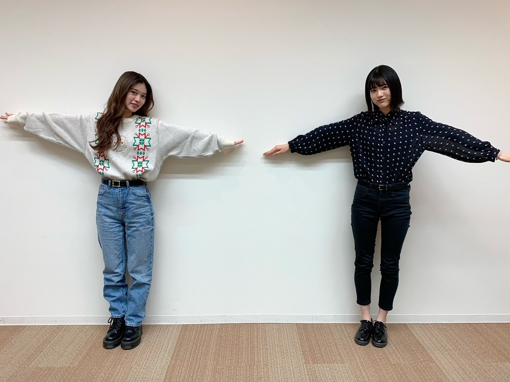
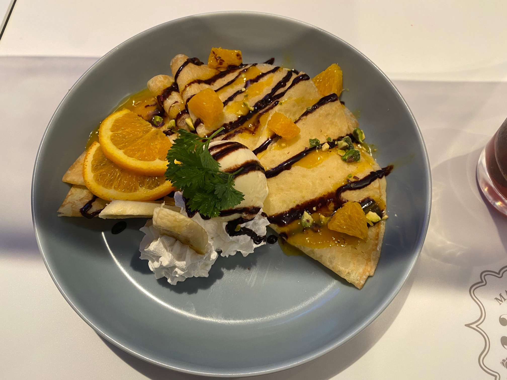
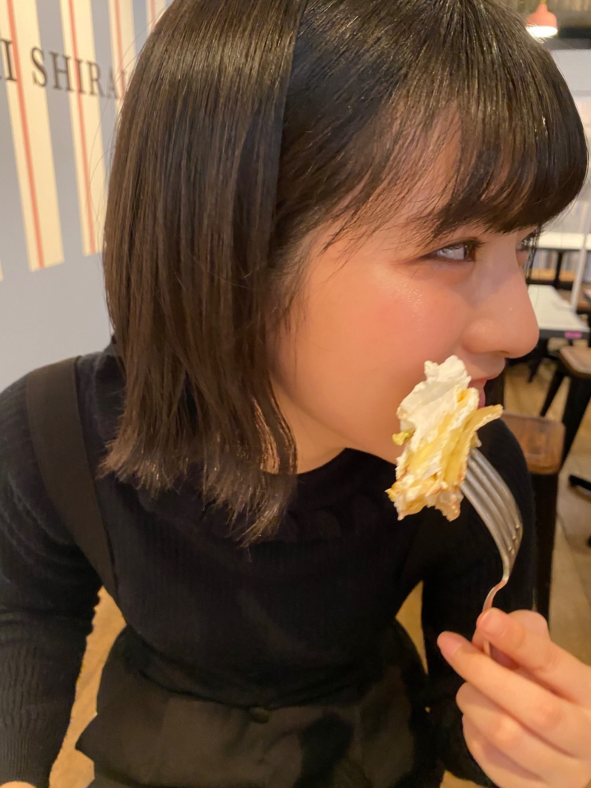

2020/1115Sunお疲れ様です！NEWSがとまらんぜ 林瑠奈です。
本日もお疲れ様です。
乃木坂46、4期生の林瑠奈です。
神奈川県出身高校2年生17歳
華咲くセブンのティーンの林瑠奈です。
負けるなしょげるな林瑠奈、今日も1日頑張るな
(ピンポーン)
41周目となりました、ブログリレー。
最近思ったことと言いますか、クラスメイトの会話が耳に入って感じたことなのですが、
よく『好きな匂いは、髪の毛から香るシャンプーの匂い』って言う人いるじゃないですか。
いや、わからないですよ。わからないですけど、そんなにシャンプーの匂いってするか？と思いまして。
至近距離ならわかるんですけど、『すれ違ったときにシャンプーの匂いがするとドキッとする』とか
それもうシャンプー過多ですよ。
ツカイスギ、ダメ、ゼッタイ
しょうもないんですけど、最近無性に思っていることです。
みなさん過剰シャンプーはお控えくださいね。
...........................................................................
この度、ニッカンスポーツ・コムで連載中の寺田蘭世さんのコラムである、『NEWSがとまらんぜ』を引き継がせて頂くことになりました。
とても緊張しています。
このお話をしていただいたのが蘭世さんとの対談の日、つまりバトンタッチ対談をさせていただく直前でして、
今まで蘭世さんが5年間務めてらっしゃったことですし、経験も浅いわたしが引き継いでいいものかと正直不安に感じておりました。
でも、引き継ぐ話の際にパッと思い浮かんだ4期の1人がわたしだったと蘭世さんからお聞きしまして、
"言葉を綴る"というわたしの好きなことを、こうした形で活かさせて頂けることが本当に嬉しいです。
これから邁進して参りますので、よろしくお願い致します。
新しいタイトルは
『負けるな！しょげるな！乗り遅れるな！』です。

マネージャーさんが撮ってくださいました。
対談の模様は、13日に発売されました乃木坂46新聞を是非チェックして頂けますと幸いです。
...........................................................................
白石さんのコラボカフェに行かせていただきました。

わたしはこちらのオレンジとバナナのクレープを頂きました。
写真を撮ることを意識せずに撮ったので、綺麗に撮れませんでした。
とても美味しかったです。

掛橋カメラ
あ、みんなも大好きなさやかの写真あるよ
彼氏目線
...........................................................................
11月10日。
阪口珠美さん、お誕生日おめでとうございます！！
本当にダンスをしている姿が綺麗で、是非教わりたい！と思っている次第です。
46時間テレビのたまトレ！あれ結構きつかったんですけど、モニターでみる珠美さんがとてもお可愛くてお可愛くて、好きです
まだお話しさせていただいたことがないので、次回のノギザカスキッツの収録の際に声かけさせてください！
素敵な一年となりますよう、祈っております！！
...........................................................................
明日はミュウちゃんです。
今何食べたい？
アディオス！！！！！！！！！！！！
かしこ
2020/11/15 18:00
コメント(168)
はやしるなちゃん！
こんばんは！
シダックスですm(__)m
るなぴとさぁちゃんのコンビは念願でした。はい。( ´,_ゝ`)
そんななかいきなり発表だったけれど、みれてよかったです！
るなぴって呼んでていいですか？呼びます！(゜ロ゜)
るなぴは、優しさと論理的なところが、とても有能だなと感じました。
さぁちゃんへのフォローとか、頭の回転など
ファンからみると、個性的なさぁちゃんをあんなに惹き付けられるって凄いことだと思います！(。-_-。)♪
ほんとうは握手会であいさつにいきます！と断言してたんだけど
新しい生活様式で話ができたら！あいさついきますね！
これからも活躍期待しております！
さぁちゃんと仲良くしてるの見るの楽しいよ(笑)
だってデレデレでしたから(笑)
ファンからみるいつものさぁちゃんとは、また違ったさぁちゃんでした(笑)
ありがとうございます！
るなぴが乃木坂に入ってくれて嬉しいです！
推しメンは掛橋沙耶香さんです！
でも、ライブが復活したら全力でるなちゃんにレスもらいにいっていいですか？w
今後もよろしくお願い致します。
いつもありがとう！
シダックス( ・ω・)
こんばんは！
シダックスですm(__)m
るなぴとさぁちゃんのコンビは念願でした。はい。( ´,_ゝ`)
そんななかいきなり発表だったけれど、みれてよかったです！
るなぴって呼んでていいですか？呼びます！(゜ロ゜)
るなぴは、優しさと論理的なところが、とても有能だなと感じました。
さぁちゃんへのフォローとか、頭の回転など
ファンからみると、個性的なさぁちゃんをあんなに惹き付けられるって凄いことだと思います！(。-_-。)♪
ほんとうは握手会であいさつにいきます！と断言してたんだけど
新しい生活様式で話ができたら！あいさついきますね！
これからも活躍期待しております！
さぁちゃんと仲良くしてるの見るの楽しいよ(笑)
だってデレデレでしたから(笑)
ファンからみるいつものさぁちゃんとは、また違ったさぁちゃんでした(笑)
ありがとうございます！
るなぴが乃木坂に入ってくれて嬉しいです！
推しメンは掛橋沙耶香さんです！
でも、ライブが復活したら全力でるなちゃんにレスもらいにいっていいですか？w
今後もよろしくお願い致します。
いつもありがとう！
シダックス( ・ω・)
林瑠奈さんこんばんは！
本日の猫舌Showroomお疲れ様でした！掛橋沙耶香さんとの掛け合いが本当に素敵で、仲良しなのがたくさん伝わってきました！！
なんか夫婦の絡みを見ているようでした笑。林ちゃんが旦那さんでさぁちゃんが奥さんです
さぁちゃんが本当に林ちゃんのこと好きなんだなぁっていうのをびしびし感じて、ずっとニコニコしてました。
あんまりニコニコしてるもんだから、配信が終わって真顔を解放した時、頬肉の筋肉痛が発症しました。痛いです。
さぁちゃんと話す林ちゃんを見て、本当に素敵な人なんだなぁって改めて思いました。
これからも応援してます！
楽しい時間をありがとうございました！
本日の猫舌Showroomお疲れ様でした！掛橋沙耶香さんとの掛け合いが本当に素敵で、仲良しなのがたくさん伝わってきました！！
なんか夫婦の絡みを見ているようでした笑。林ちゃんが旦那さんでさぁちゃんが奥さんです
さぁちゃんが本当に林ちゃんのこと好きなんだなぁっていうのをびしびし感じて、ずっとニコニコしてました。
あんまりニコニコしてるもんだから、配信が終わって真顔を解放した時、頬肉の筋肉痛が発症しました。痛いです。
さぁちゃんと話す林ちゃんを見て、本当に素敵な人なんだなぁって改めて思いました。
これからも応援してます！
楽しい時間をありがとうございました！
こんばんは、初めまして！まさやと申します。
こんな形で自己紹介でごめんなさい。
今日はshowroomお疲れ様でした。
さやかちゃんとの仲睦まじい姿見れて凄く楽しかったです。
林さんに甘えてるさやかちゃん、いつもと違った雰囲気見れて面白かったですw
最後名前の読み上げありがとうございました。
掛林ちゅきちゅきさやかちゃんを独り占めしないで、とか変な文書いてごめんなさい。読み上げで嫌な気分にさせてたら申し訳ないです！
お二人のペアとても好きです。ちょうどいい距離感でやりとりが凄く面白いです！
これからも2人仲良く楽しく過ごしてください。
今日はありがとうございました！
楽しい時間でした、また何かの機会があればよろしくお願いします。
まさや( ˊ̱˂˃ˋ̱ )
こんな形で自己紹介でごめんなさい。
今日はshowroomお疲れ様でした。
さやかちゃんとの仲睦まじい姿見れて凄く楽しかったです。
林さんに甘えてるさやかちゃん、いつもと違った雰囲気見れて面白かったですw
最後名前の読み上げありがとうございました。
掛林ちゅきちゅきさやかちゃんを独り占めしないで、とか変な文書いてごめんなさい。読み上げで嫌な気分にさせてたら申し訳ないです！
お二人のペアとても好きです。ちょうどいい距離感でやりとりが凄く面白いです！
これからも2人仲良く楽しく過ごしてください。
今日はありがとうございました！
楽しい時間でした、また何かの機会があればよろしくお願いします。
まさや( ˊ̱˂˃ˋ̱ )
本日の乃木坂46にゃんば〜1お疲れ様でした。
壇上の自分の名前でのお目目汚しをお詫びいたします。
非常に楽しく番組を拝見させていただいて、
掛橋沙耶香さんとの揺らがぬ信頼感も感じ、非常に良き時間を過ごさせていただきました。
お2人が作り出す、尊い時間に多幸感を覚え、この時間が終わってほしくないとすら思えました。
これからもお2人の作り出す時間を楽しみにしています。
壇上の自分の名前でのお目目汚しをお詫びいたします。
非常に楽しく番組を拝見させていただいて、
掛橋沙耶香さんとの揺らがぬ信頼感も感じ、非常に良き時間を過ごさせていただきました。
お2人が作り出す、尊い時間に多幸感を覚え、この時間が終わってほしくないとすら思えました。
これからもお2人の作り出す時間を楽しみにしています。
オモロクナリタイ…
林さんみたいに
オモロクナリタイ…


林さんみたいに
オモロクナリタイ…
猫舌SHOWROOMお疲れ様でした...
とても掛橋さんと仲がいいんだなと、見ていて感じました。
僕とのミーグリ中にあんな表情見たことありません。
僕は自分の頬を伝う大粒の涙を拭きながら帰りの電車一人スマホの画面を眺めてました。
俺とのあの時間は...なんだったんだろう。
そんな無力感に苛まれながら帰っていました。
しかし僕は気づきました。俺と掛橋さんとの時間だって、誰にも再現することのできない唯一無二の時間なんじゃないかと。
俺は...諦めません。
今日から林ちゃんは俺の圧倒的なライバルに、勝手に決めさせてもらいました。
俺は負けません。
いつか握手会で直接対決できるのを楽しみにしています。
永遠のライバル やんつねより
あ、あとめっちゃ昔の話になりますが、バスラでの自己紹介と意気込みみたいなのめっちゃ印象に残ってて好きです。
では！
とても掛橋さんと仲がいいんだなと、見ていて感じました。
僕とのミーグリ中にあんな表情見たことありません。
僕は自分の頬を伝う大粒の涙を拭きながら帰りの電車一人スマホの画面を眺めてました。
俺とのあの時間は...なんだったんだろう。
そんな無力感に苛まれながら帰っていました。
しかし僕は気づきました。俺と掛橋さんとの時間だって、誰にも再現することのできない唯一無二の時間なんじゃないかと。
俺は...諦めません。
今日から林ちゃんは俺の圧倒的なライバルに、勝手に決めさせてもらいました。
俺は負けません。
いつか握手会で直接対決できるのを楽しみにしています。
永遠のライバル やんつねより
あ、あとめっちゃ昔の話になりますが、バスラでの自己紹介と意気込みみたいなのめっちゃ印象に残ってて好きです。
では！
お疲れ様です！
猫舌showroom楽しかったです～
沙耶香の面倒見係みたいになってましたねw
色々フォローありがとうございましたw
掛林コンビ好きです
夜分遅くに失礼しました！
りょう◎
猫舌showroom楽しかったです～
沙耶香の面倒見係みたいになってましたねw
色々フォローありがとうございましたw
掛林コンビ好きです
夜分遅くに失礼しました！
りょう◎
初めまして、瑠奈ちゃんこんばんは〜
猫舌お疲れ様でした！！
めっちゃ面白かったです！！
瑠奈ちゃんのツッコミな感じとかお姉さん？的な対応が、さぁちゃんの可愛いところいっぱい引き出してて天才でした
掛林のコンビ仲良すぎるしイチャイチャしてて見てて微笑ましいと思ったし、一番好きです！
また2人でのお仕事楽しみにしてます
さぁちゃんの可愛いところをこんなに引き出してくれて、フォロー入れてくださったり本当に感謝してます！！
ラジオのお仕事が来ても安心できるくらい聴いてても楽しかったです！！
幸せな時間をありがとうございました！！
猫舌お疲れ様でした！！
めっちゃ面白かったです！！
瑠奈ちゃんのツッコミな感じとかお姉さん？的な対応が、さぁちゃんの可愛いところいっぱい引き出してて天才でした
掛林のコンビ仲良すぎるしイチャイチャしてて見てて微笑ましいと思ったし、一番好きです！
また2人でのお仕事楽しみにしてます
さぁちゃんの可愛いところをこんなに引き出してくれて、フォロー入れてくださったり本当に感謝してます！！
ラジオのお仕事が来ても安心できるくらい聴いてても楽しかったです！！
幸せな時間をありがとうございました！！
きーぬです！
猫舌お疲れ様でした！
今までいろんな沙耶香さん見させてもらいましたが、あそこまでデレッデレした沙耶香さんは初めてでした笑笑
沙耶香さんとの仲睦まじすぎるイチャイチャカップルを見せていただき本当にありがとうございます…
林さんの方も彼氏的な位置を楽しめていたようで、良かったです。
沙耶香さん声可愛すぎですよね…
でもそれと同じくらい林の司会力というか
話を回すのが上手くて素敵だなって思いました！
あの沙耶香さんを見事に手名付けて…笑
ラジオやったらめちゃくちゃ面白そう！笑
改めて猫舌お疲れ&ありがとうー！！
最後になんか言って終わります。
”縛る“という概念がない人
「ヘアゴムを外したら…突然髪が伸びた！？」
以上です。
ありがとうございました。
猫舌お疲れ様でした！
今までいろんな沙耶香さん見させてもらいましたが、あそこまでデレッデレした沙耶香さんは初めてでした笑笑
沙耶香さんとの仲睦まじすぎるイチャイチャカップルを見せていただき本当にありがとうございます…
林さんの方も彼氏的な位置を楽しめていたようで、良かったです。
沙耶香さん声可愛すぎですよね…
でもそれと同じくらい林の司会力というか
話を回すのが上手くて素敵だなって思いました！
あの沙耶香さんを見事に手名付けて…笑
ラジオやったらめちゃくちゃ面白そう！笑
改めて猫舌お疲れ&ありがとうー！！
最後になんか言って終わります。
”縛る“という概念がない人
「ヘアゴムを外したら…突然髪が伸びた！？」
以上です。
ありがとうございました。
おはよう！華咲くセブンティーンのはやしさん初めまして笑
初めてコメントします笑
昨日の猫舌の2時間。ほんと最高な2時間でした！
さぁちゃんとのエピソードを話してくれるはやし。それに対してみんなの前では言わないでと恥ずかしがるさぁちゃん。他にもいろいろ、はやしとさぁちゃんとの掛け合いが最高すぎた笑
またちょっと特別なさぁちゃんを見ることが出来てほんとよかった！！
そしてはやし天才すぎる笑
はやしとさぁちゃんの配信ほんと何回でも見れるし絶対またやって欲しいなぁ。
そしてさぁちゃん。お姉さんキャラ目指すとか言ってたのに、はやしの前でめっちゃ妹キャラ全開すぎる笑笑
こりゃお姉さんキャラは程遠いな笑
絶対また2人でのお仕事を見れるの待ってます！！
そしてこれも言わせて欲しい。ノギザカスキッツでのはやし。ほんと面白すぎて笑い止まらない笑笑
1番好きなのはニューヨークさんのネタを完コピするはやし。あれ好きすぎる笑
あれ見たあとにしっかりニューヨーク本人さんのネタ見に行きました笑
これからのスキッツも色んなはやしのキャラ見れることを楽しみにしてる！！
さてさて。ちょっと初めてのコメント記念でたくさん質問させてください！！
【質問】
・子供の頃を思い出して懐かしいものあったら教えて！
・男子が作れたらかっこいい料理は？
・最近ハマってる食べ物は？
・乃木坂メンバーで一緒に旅行に行くとしたら誰と行く？
・もっと仲良くなりたいと思ってるメンバーは？
今日はこのくらいで！
またコメントするね！！今日も1日頑張ろう！！
掛橋まさきより
初めてコメントします笑
昨日の猫舌の2時間。ほんと最高な2時間でした！
さぁちゃんとのエピソードを話してくれるはやし。それに対してみんなの前では言わないでと恥ずかしがるさぁちゃん。他にもいろいろ、はやしとさぁちゃんとの掛け合いが最高すぎた笑
またちょっと特別なさぁちゃんを見ることが出来てほんとよかった！！
そしてはやし天才すぎる笑
はやしとさぁちゃんの配信ほんと何回でも見れるし絶対またやって欲しいなぁ。
そしてさぁちゃん。お姉さんキャラ目指すとか言ってたのに、はやしの前でめっちゃ妹キャラ全開すぎる笑笑
こりゃお姉さんキャラは程遠いな笑
絶対また2人でのお仕事を見れるの待ってます！！
そしてこれも言わせて欲しい。ノギザカスキッツでのはやし。ほんと面白すぎて笑い止まらない笑笑
1番好きなのはニューヨークさんのネタを完コピするはやし。あれ好きすぎる笑
あれ見たあとにしっかりニューヨーク本人さんのネタ見に行きました笑
これからのスキッツも色んなはやしのキャラ見れることを楽しみにしてる！！
さてさて。ちょっと初めてのコメント記念でたくさん質問させてください！！
【質問】
・子供の頃を思い出して懐かしいものあったら教えて！
・男子が作れたらかっこいい料理は？
・最近ハマってる食べ物は？
・乃木坂メンバーで一緒に旅行に行くとしたら誰と行く？
・もっと仲良くなりたいと思ってるメンバーは？
今日はこのくらいで！
またコメントするね！！今日も1日頑張ろう！！
掛橋まさきより
るなぴ( ˙꒳˙ )
さやかちゃん推しの人です！沙耶香ちゃんと結婚するのはわたし〜♡
きのうは猫舌お疲れ様でした！！！！！
２時間じっくりじっくり見てました！！
かけはやしのふたりが喋ってる所を２時間も見れるのしあわせすぎた(;_;)
ちょいちょいでてくるさやかちゃんの実はデレデレな話とか、ちょっともうるなぴに嫉妬しかしませんでしたけど、いろんな表情のさやかちゃんを出してくれてどうもありがとうございました♡
るなぴはすごくお姉さん気質で、ことあるごとに「大丈夫？」って声かけてたり、大香風してるさやかちゃんを冷静に落ち着かせたり、なんかギャップやばかった！！
いつもさやかちゃんがお世話になってます(﹡ˆˆ﹡)笑
イントロ問題のじゃあねのときもひたすら林の良さが出てた！！！
だけど、図書図書って書こうとしたとかそういうかわいいところもあるんだね♡
わたしもるなぴとお友達になりたーーい！！もちろんさやかちゃんと近付ける下心ありまくりだけど、単純にるなぴといると楽しそう♡
わたしもるなちゃんの握手会いきたくなったのでつぎ、とります( ˘•ω•˘ )
ご飯にバウンドさせて食べたいものはなんですかっ？ (笑)
ばいばいっ
またコメントするね！！！つぎのブログ更新は沙耶香ちゃんのお誕生日だねぇええ！！！！
オモロクナリタイ…
岐阜県…あっ､間違えた！
林瑠奈さんみたいに
オモロクナリタイ…


岐阜県…あっ､間違えた！
林瑠奈さんみたいに
オモロクナリタイ…
オモシロク…
あっ間違えた！
オモロクナリタイ
ロールスロイスみたい…
あっ､また間違えた！！
林瑠奈さんみたいに
オモロクナリタイ

あっ間違えた！
オモロクナリタイ
ロールスロイスみたい…
あっ､また間違えた！！
林瑠奈さんみたいに
オモロクナリタイ
チャァオ〜〜!☆彡
るなちゃん❕❤️❤️❤️❤️❤️笑顔
乃木坂スキッツリアルタイムで見てたよ〜〜❕❤️❤️❤️❤️❤️笑顔
るなちゃんの演技〜〜〜
面白かったよおお〜〜⤴️⤴️⤴️❕❤️❤️❤️❤️❤️笑顔
次回も楽しみにしているねぇ⤴️⤴️⤴️❤️❤️❤️❤️❤️笑顔
(＠＾▽゜＠）ゞ❤️❤️❤️
❇️❇️おすまし！⚜️❇️⭐彡
るなちゃん！！やっほー！
39周目のブログに今日コメントしちゃったけど、結構前にすでに投稿したかも(語彙力)((((
多分このブログこそ読めていなかったですす←
これを機にニッカンスポーツ毎回買おうかな、！
たのしみ！
クレープ！！
クレープじゃないけど私は今日パンケーキ食べた、！！！
8段のパンケーキで、食べるの苦しカタ…ひいぃ。
お初カヌレも買ってみた、！
明日食べます()()
以上！次は42周目のブログに書きますｯ！
あでぃおす！
39周目のブログに今日コメントしちゃったけど、結構前にすでに投稿したかも(語彙力)((((
多分このブログこそ読めていなかったですす←
これを機にニッカンスポーツ毎回買おうかな、！
たのしみ！
クレープ！！
クレープじゃないけど私は今日パンケーキ食べた、！！！
8段のパンケーキで、食べるの苦しカタ…ひいぃ。
お初カヌレも買ってみた、！
明日食べます()()
以上！次は42周目のブログに書きますｯ！
あでぃおす！
チャァオ〜〜〜!☆彡
るなちゃんは〜〜⤴️⤴️⤴️
キレイだなあああ〜〜〜〜⤴️⤴️⤴️❕❤️❤️❤️❤️❤️ポォ
るなちゃん、頑張ってねぇ⤴️⤴️⤴️❕❤️❤️❤️❤️❤️笑顔
応援しているよ〜〜⤴️⤴️⤴️❕❤️❤️❤️❤️❤️笑顔
❤️❤️❤️Ｏ(≧∇≦)Ｏ❤️❤️❤️
❇️❇️おすまし！⚜️❇️⭐彡
どんどん好きになってます^ ^
可愛い〜
可愛い〜
コメントする

PROFILE
新4期生リレー
202104
| SUN | MON | TUE | WED | THU | FRI | SAT |
|---|---|---|---|---|---|---|
| 1 | 2 | 3 | ||||
| 4 | 5 | 6 | 7 | 8 | 9 | 10 |
| 11 | 12 | 13 | 14 | 15 | 16 | 17 |
| 18 | 19 | 20 | 21 | 22 | 23 | 24 |
| 25 | 26 | 27 | 28 | 29 | 30 | |

マニフェストありがと〜
11／20を国民の祝日にしてもらうために林さんに1票入れるね！